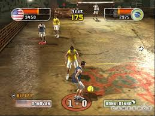
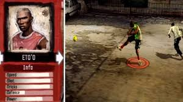
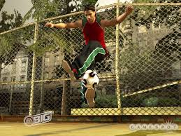
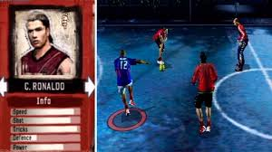

Fifa Street 2

Data de Lançamento
28 de fevereiro de 2006
Desenvolvedora
EA Canada
Sinopse
FIFA Street 2 é um jogo de futebol de rua focado em jogadas habilidosas e partidas em ambientes urbanos. Diferente do futebol tradicional, o jogo valoriza dribles, truques e estilo.
Imagens




⬅ Voltar